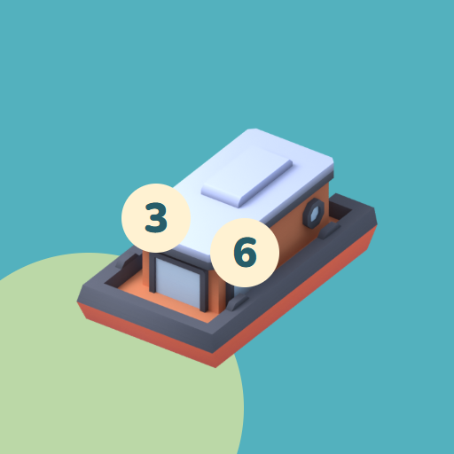

<- all projects

Number Ferry
PC
Volume
Live
Every boat needs an exact total.
An old ferry, a bundle of letters and a river waiting to be reconnected. Join Mara on a journey through five riverside towns, where every passenger carries a number and every crossing needs an exact total. Choose who boards, match the sign without going over the seats and think one trip ahead, because a group that fits now can leave an impossible remainder on the bank. Balanced boats split the load across two equal decks, and route boats follow a list of stops. Play 150 crossings with three boat types across five chapters, with a letter from Gran at the end of each, plus a daily crossing and 90 twilight crossings.